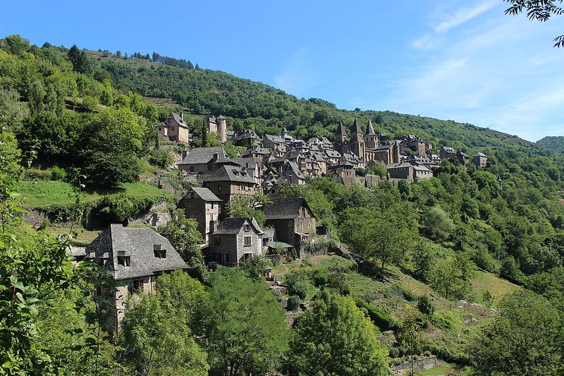
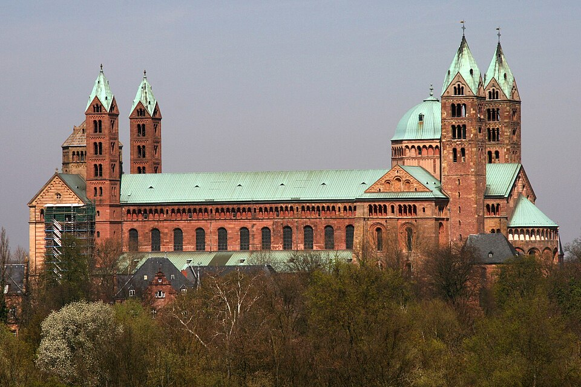
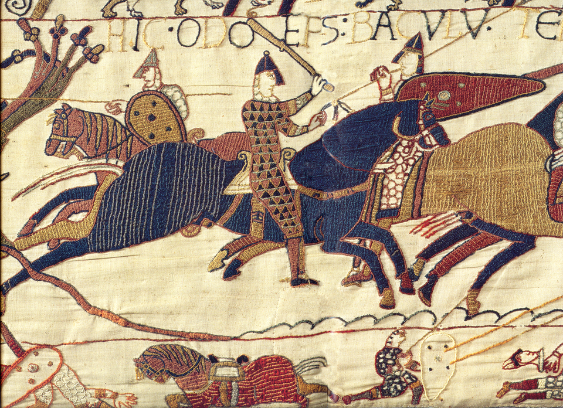
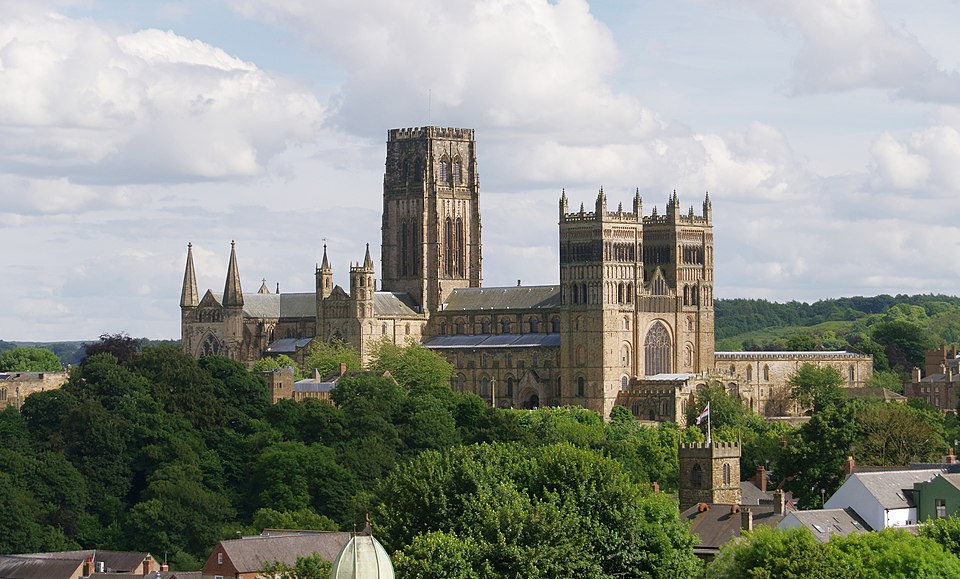
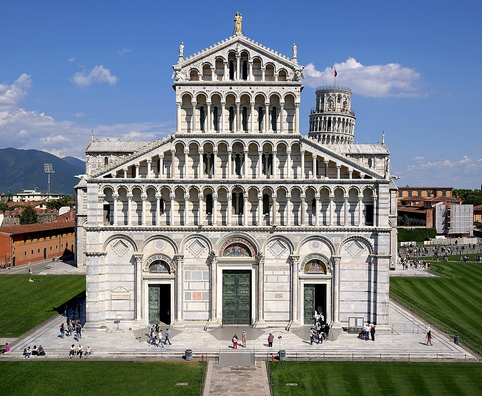
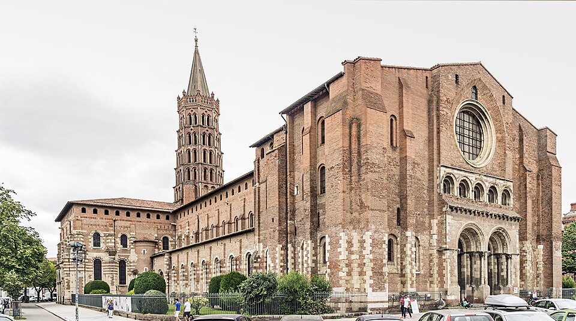
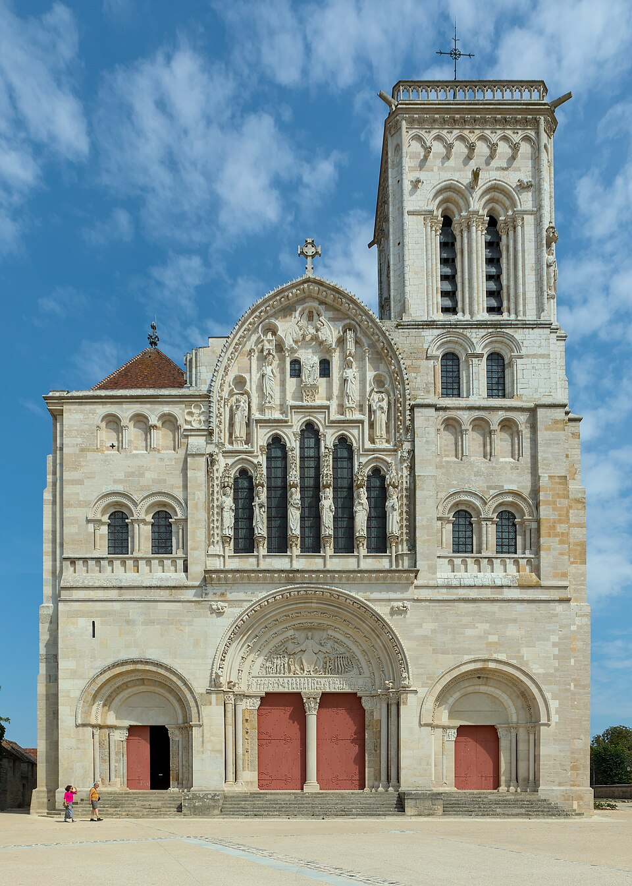
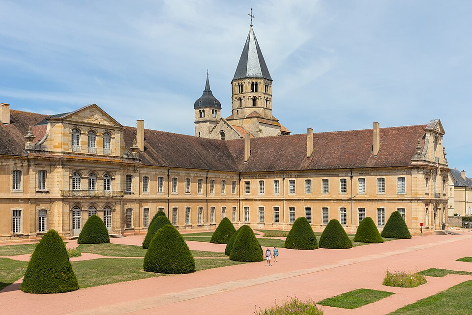
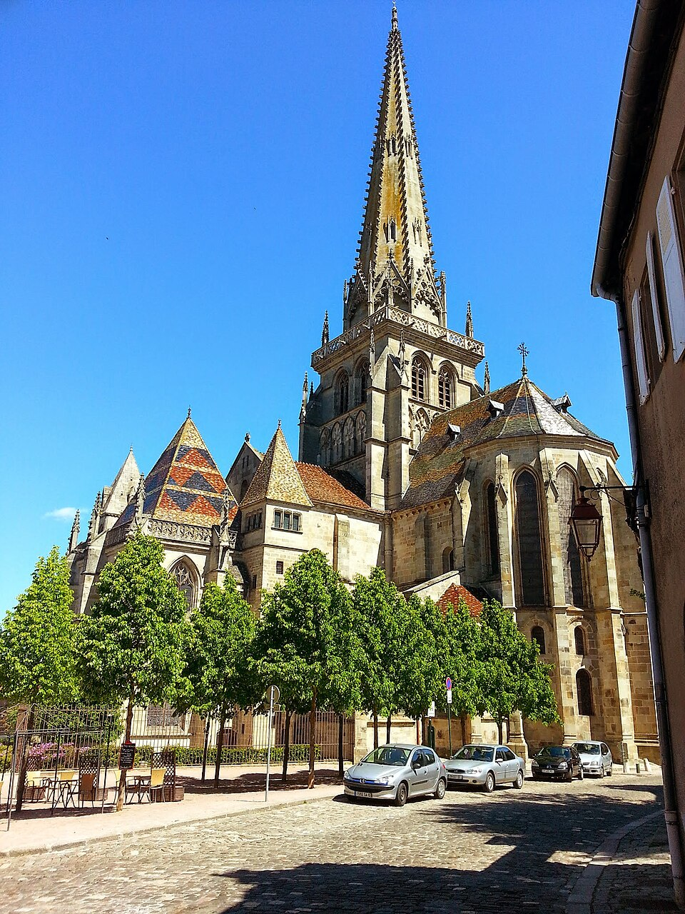
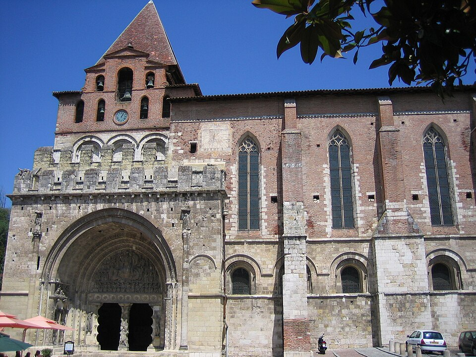

🏆 Meesterwerk: Sainte-Foy de Conques
Een meesterwerk van Romaanse architectuur en beeldhouwkunst

Conques, Frankrijk, 11e-12e eeuw
📚 TIJDSGEEST CONTEXT (800-1200)
🌍 POLITIEK PERSPECTIEF
De Romaanse kunst (1000-1200) ontwikkelde zich tijdens een periode van fundamentele politieke transformatie in Europa, gekenmerkt door de overgang van de fragiele feodale orde van de vroege middeleeuwen naar een stabieler en gestructureerder systeem. De politieke structuur werd gedomineerd door een tripartite macht: de Rooms-Katholieke Kerk, de feodale adel, en in toenemende mate, de opkomende koninkrijken die autoriteit begonnen te centraliseren. De Kerk was verreweg de belangrijkste politieke en culturele instelling, met de paus als spiritueel leider die aanzienlijke wereldlijke macht uitoefende. De Investituurstrijd (1075-1122) tussen paus en keizer over het recht om bisschoppen te benoemen, demonstreerde de spanning tussen kerkelijke en wereldlijke autoriteit die de politiek van de periode domineerde. De Cluniacenser hervormingsbeweging, begonnen in de 10e eeuw, zocht de kerk te zuiveren van wereldlijke corruptie en leidde tot een explosie van kerkelijke bouwactiviteit die de Romaanse stijl definieerde.
De sociale dynamiek werd gekenmerkt door het feodale systeem, waarbij landheren land in leen gaven aan vazallen in ruil voor militaire dienst, en boeren het land bewerkten in ruil voor bescherming. Dit systeem, hoewel in theorie hiërarchisch en stabiel, was in de praktijk vaak chaotisch, met lokale conflicten, roverbaronnen en fragiele allianties. De kerk bood een alternatieve sociale structuur: kloosters fungeerden als centra van onderwijs, gezondheidszorg en gastvrijheid, en de clerus was de enige instelling die de gehele Europese samenleving overspande. De pelgrimsroutes naar Santiago de Compostella, Rome en Jeruzalem schiepen een netwerk van kerken en kloosters die artistieke en culturele uitwisseling mogelijk maakten. De Romaanse periode zag ook de eerste opkomst van stedelijke centra, waar handel en ambacht begonnen te floreren en een nieuwe middenklasse ontstond die kunst begon te patroneren.
De kruistochten (vanaf 1096) vormden een cruciale politieke gebeurtenis die direct de kunst beïnvloedde. De Eerste Kruistocht (1096-1099) resulteerde in de verovering van Jeruzalem en de vestiging van kruisvaardersstaten in het Heilig Land, wat leidde tot intensief contact met Byzantijnse en islamitische kunst. Deze culturele uitwisseling introduceerde nieuwe motieven, technieken en materialen in de Europese kunst. De Reconquista in Spanje, waarbij christelijke koninkrijken terrein wonen op de islamitische Moorse staten, bracht Europese kunstenaars in contact met de verfijnde islamitische kunst en architectuur. De Normanische verovering van Engeland (1066) en Zuid-Italië creëerde een cultureel netwerk dat de Romaanse stijl verspreidde en regionaliseerde.
De verbinding tussen politiek en artistieke stijl was direct en intentioneel. De massieve, dikke muren, kleine ramen en ronde bogen van de Romaanse architectuur weerspiegelden een tijdperk van onveiligheid en behoefte aan verdediging, maar ook de technische beperkingen van een samenleving die de technieken van de Romeinen gedeeltelijk was verloren. De monumentale sculptuur van kerkportalen - met tympana die het Laatste Oordeel, Christus in Majesteit of de hemelvaart van Maria afbeeldden - was een instrument van religieuze en politieke instructie: ze herinnerden de gelovigen aan de goddelijke orde, de straf voor zonden en de autoriteit van de kerk. De voorkeur voor hoogreliëf, waarin figuren bijna vrijstaand uit de achtergrond kwamen, en de combinatie van klassieke, Byzantijnse en 'barbaarse' elementen weerspiegelde een cultuur die zichzelf definieerde als christelijk erfgenaam van Rome, maar ook zijn eigen hybride identiteit ontwikkelde. De kleurrijke muurschilderingen en verluchte manuscripten, met hun felle primaire kleuren en strakke compositie, dienden als visuele theologie voor een grotendeels analfabete bevolking. De Romaanse kunst was niet slechts decoratie, maar een instrument van religieuze instructie, politieke propaganda en sociale cohesie in een wereld die nog steeds worstelde om stabiliteit te vinden na de val van Rome.
Bronnen: Wikipedia - Romanesque art, Romanesque architecture, Investiture Controversy, Crusades, Cluniac Reforms, Feudalism.
📖 LITERAIR PERSPECTIEF
De Romaanse periode (800-1200) kende een explosie van literaire productie die nauw verbonden was met de opkomst van de Romaanse kunststijl. Drie dominante genres beïnvloedden de visuele cultuur: kronieken, chanson de geste en religieus drama. Historiografische kronieken, vaak geschreven in kloosters, documenteerden zowel wereldlijke als kerkelijke geschiedenis. De 'Chronica' van Beda Venerabilis, de 'Annalen' van Einhard en de 'Historia Regum Britanniae' van Geoffrey van Monmouth verspreidden verhalen die in steen werden gebeiteld op kapitelen, tympanen en gevels. De legende van Koning Arthur, populair gemaakt door Geoffrey, inspireerde talloze beeldhouwwerken in Franse en Engelse kerken. De 'chanson de geste', epische heldendichten over Karel de Grote en zijn paladijnen, bereikte haar hoogtepunt met het 'Chanson de Roland' (ca. 1100). Dit epos, dat het conflict tussen christenen en moslims in Spanje beschrijft, belichaamde de kruisvaardersideologie en werd weerspiegeld in de ridderlijke iconografie van Romaanse kerken. Taferelen van de strijd tussen goed en kwaad, heiligen die demonen verslaan en ridders in wapenrusting verschenen op kerkgevels als visuele echo's van deze mondeling overgeleverde zangcycli. Religieus drama ontwikkelde zich vanuit de liturgie: liturgische spelen, mysteriespelen en mirakelspellen brachten bijbelse verhalen tot leven voor een analfabete bevolking. Deze toneeltraditie, die ontstond rond Paastijd en Kerstmis, vormde een directe bron voor de dramatische composities op Romaanse tympanen. Het Laatste Oordeel, het populairste thema op kerkportalen, werd opgevoerd in mysteriespelen met engelen, verdoemden en opgestane zielen. De literaire structuur van deze spelen - dialogen tussen personages, tableau-vivante scènes - vond zijn visuele equivalent in de gestapelde registers van timpanen en de hiërarchische rangorde van gebeeldhouwde figuren. Monastieke literatuur, waaronder de 'Vitae' (heiligenlevens) en de 'Visiones' (visioenen zoals die van Tondal en de 'Tractatus de Purgatorio Sancti Patricii'), bood een schat aan iconografisch materiaal. De fantastische beschrijvingen van hemel, hel en vagevuur werden vertaald naar gedetailleerde beeldhouwwerken die de gelovigen herinnerden aan het leven na de dood. Ook bestiarium-literatuur, geïllustreerde boeken over echte en fabeldieren, beïnvloedde de Romaanse beeldtaal. Symbolische dieren zoals de pelikaan (Christus), de eenhoorn (zuiverheid) en de basilisk (duivel) verschenen in kerkdecoraties als visuele preken. Deze literaire erfenis vormde de conceptuele basis voor de Romaanse beeldhouwkunst. De tympanen boven kerkportalen, met hun dramatische voorstellingen van het Laatste Oordeel, functioneerden als visuele equivalenten van de apocalyptische preken. De kapitelen met hun mengeling van bijbelse verhalen en fantastische wezens weerspiegelden de middeleeuwse literaire verbeelding die geen scherpe scheiding kende tussen heilig en profaan, tussen realiteit en fabel. De analfabete bevolking 'las' deze stenen verhalen zoals de monniken de heiligenlevenden lazen - als bronnen van morele instructie en religieuze verwondering.
🧠 PSYCHOLOGISCH PERSPECTIEF
De romaanse kunst, die in West-Europa bloeide tussen circa 1000 en 1200, vertoonde een psychologische rijkdom die direct verband hield met de middeleeuwse wereldbeschouwing. In een tijd waarin het moderne concept van 'individuele psychologie' nog niet bestond, externaliseerde de romaanse kunst innerlijke toestanden in symbolische vormen die universeel herkenbaar waren voor de middeleeuwse gelovige.
De massive, dikwandige kerken van de romaanse periode, zoals de Abdij van Cluny (1088-1130) en de Dom van Spiers (1030-1061), creëerden een psychologische ervaring van bescherming en goddelijke aanwezigheid. Waar de gotische kerk later het licht zou vieren, bood de romaanse kerk een 'psychologische schuilplaats': donkere, stevige ruimtes die de gelovige omringden met de massiviteit van het goddelijke. Deze architectuur kan psychologisch worden begrepen als een 'containing environment' – een term die psychoanalyticus Donald Winnicott (1896-1971) zou gebruiken voor ruimtes die veiligheid en geborgenheid bieden.
De romaanse kapitelen, versierd met fantastische wezens en bijbelse verhalen, fungeerden als 'psychologische gidsen' die de gelovige door een moreel landschap leidden. Het beroemde kapiteel met 'De wellustelijken' in de kerk van Saint-Pierre in Moissac (ca. 1120-1130) toont vrouwen die door slangen worden gebeten, een visualisatie van zonde en straf die psychologisch functioneerde als een waarschuwing. Deze 'psycho-machy' of strijd der zielen vertoonde trekken van wat moderne cognitieve psychologie 'framing' noemt: de presentatie van morele keuzes in visuele termen.
De tympanen boven de portalen van romaanse kerken, zoals dat van de Kathedraal van Autun (1120-1132) door Gislebertus, toonden de 'Laatste Oordeel' in alle grafische details: de verlosten worden gewogen, de verdoemden worden verslonden door demonen. Deze scènes kunnen psychologisch worden begrepen als een vorm van 'angstcommunicatie': het gebruik van visuele middelen om gedrag te beïnvloeden door het op te roepen van existentiële angst. Gislebertus' 'De Zonde van Eva' toont de eerste vrouw in een gecompliceerde pose die zowel verleiding als berouw suggereert, een psychologische complexiteit die vooruitliep op latere ontwikkelingen.
De romaanse fresco's, zoals die in de crypte van de Kathedraal van Auxerre (ca. 1100) of in de kerk van Saint-Savin-sur-Gartempe (1080-1120), gebruikten sterke kleuren en vereenvoudigde vormen om emotionele reacties uit te lokken. De fresco's van Saint-Savin vertellen bijbelse verhalen in een continue narratief dat psychologen zouden herkennen als een vorm van 'visual storytelling': het overbrengen van morele boodschappen door sequentiële beelden. De blauwe achtergronden en rode nimben creëerden een visuele hiërarchie die de gelovige hielp de belangrijkste figuren te identificeren.
De romaanse beelden van Christus als 'Majestas Domini' – de Heer in majesteit, omringd door de symbolen van de vier evangelisten – boden een psychologische geruststelling: de goddelijke orde die de chaos van de wereld beheerste. Deze beelden, zoals dat op het beroemde klooster van Santiago de Compostela (1075-1211), functioneerden als wat Jungiaanse psychologen 'archetypische beelden' noemen: universele symbolen die diepe psychische resonantie oproepen. De 'Pantocrator' fresco's in de apsis van romaanse kerken, zoals die van Sant Climent de Taüll (1123) in Catalonië, toonden Christus met een strenge maar sferische blik die zowel angst als vertrouwen opriep.
De cloister of kloostergangen van romaanse abdijen, zoals die van het Klooster van Santo Domingo de Silos (ca. 1080-1100), boden een psychologische omgeving voor contemplatie en onttrekking aan de wereld. De herhaalde zuilen en kapitelen, variërend van geometrische patronen tot fantastische wezens, creëerden een ritme dat de monnik door zijn dagelijkse routine leidde. Psychologisch gezien bood de cloister een 'gestructureerde omgeving' die de cognitieve belasting verminderde en ruimte maakte voor spirituele reflectie. De beroemde 'Peregrinatio' kapitelen in Silos, die pelgrims in verschillende poses tonen, vertellen een verhaal van spirituele reis dat de monnik kon identificeren als zijn eigen psychologische pad.
🏛️ HISTORISCH PERSPECTIEF
De romaans kunst ontwikkelde zich in Europa tussen de tiende en de twaalfde eeuw, een periode die gekenmerkt werd door de consolidatie van het feodalisme, de expansie van het christendom en de opkomst van de eerste nationale monarchieën. Deze kunstvorm ontstond na de donkere eeuwen die volgden op de val van het Romeinse Rijk en legde de basis voor de latere gotiek. De technologische context was die van een beschaving die langzaam herstelde van de ineenstorting van de Romeinse infrastructuur: de steenbouwtechnieken werden herontdekt en verfijnd, wat leidde tot de constructie van massieve kerken met dikke muren, kleine ramen en ronde bogen die de naam 'romaanse' stijl zouden bepalen. De uitvinding van de zwaarte-pomp en verbeteringen in de landbouwtechnologie, zoals het drieslagstelsel dat zich in de achtste eeuw verspreidde, verhoogden de productiviteit en maakten grotere bevolkingen en meer gespecialiseerde ambachtslieden mogelijk. De economische context was die van een overwegend agrarische samenleving georganiseerd rond feodale heren die land bezaten en boeren die op dit land werkten in ruil voor bescherming. De handel was beperkt maar groeide gestaag, met jaarmarkten en pelgrimsroutes die goederen en ideeën verspreidden. De pelgrimsroutes naar Santiago de Compostela, die vanaf de negende eeuw populair werden, fungeerden als belangrijke kanalen voor culturele uitwisseling en stimuleerden de bouw van kerken langs de route. De sociale context werd gedomineerd door een strikte hiërarchie: de adel controleerde het land en de politieke macht, de geestelijkheid beheerste religie en kennis, en de boeren en horigen vormden de overgrote meerderheid van de bevolking. Steden begonnen te groeien als centra van handel en ambacht, maar bleven klein in vergelijking met de klassieke of latere middeleeuwse periode. De religieuze context was essentieel: de katholieke kerk was de belangrijkste opdrachtgever voor romaans kunst en architectuur, en kerken en kloosters fungeerden als centra van zowel religieus leven als culturele productie. De Kloosterhervorming van Cluny, die in 910 begon, leidde tot de bouw van enorme kloosterkerken die de romaans architectuur op een hoogtepunt brachten. De kruistochten, die in 1096 begonnen, brachten Europese christenen in contact met de islamitische wereld en Byzantium, wat leidde tot culturele uitwisseling. De politieke context zag de consolidatie van het Heilige Roomse Rijk onder de Ottoonse dynastie, die regeerde van 919 tot 1024, en de expansie van het christendom naar het noorden en oosten van Europa. De Normandische verovering van Engeland in 1066 en de Reconquista op het Iberisch schiereiland transformeerden de politieke kaart van Europa. De intellectuele context omvatte de Karolingische renaissance die in de achtste en negende eeuw onder Karel de Grote was begonnen en de basis legde voor een herstel van geleerdheid en kunstproductie. De kloosterscholen bewaarden klassieke kennis en produceden verluchte manuscripten die tot de hoogtepunten van de romaans kunst behoren.
💭 FILOSOFISCH PERSPECTIEF
De Romaanse kunst (1000-1200) ontwikkelde zich in een filosofische context die werd gedomineerd door de scholastieke synthese van christelijke theologie en aristotelische logica, met als centrale figuur Anselmus van Canterbury (1033-1109) en later de vroege scholastiek van Peter Abélard (1079-1142). Epistemologisch gezien baseerde de Romaanse periode zich op het augustinische 'credo ut intelligam' ('ik geloof opdat ik begrijp'), waarbij geloof voorafgaat aan kennis. Anselmus' ontologisch godsbeeld ('dat waaronder niets groters kan worden gedacht') fundeerde een rationele theologie die de Romaanse kunst rechtvaardigde: de kerk als 'hemel op aarde' was een rationele weerspiegeling van Gods volmaaktheid. De monastieke hervormingen van Cluny (gesticht 910) en later de Cisterciënzers introduceerden een ethiek van sobere majesteit: de Romaanse kerk was een 'Godsburg' waarin de gelovige werd herinnerd aan de tijdelijkheid van het aardse en de eeuwigheid van het hemelse. De metafysiek van de Romaanse periode was diep geworteld in het neoplatonisme van Pseudo-Dionysius de Areopagiet (5e-6e eeuw), wiens 'negatieve theologie' (via negativa) benadrukte dat God niet kan worden beschreven, alleen via ontkenning. Dit vertaalde zich naar de Romaanse esthetica: de abstracte, gestileerde figuren, de vlakke composities en de symbolische kleuren (blauw voor hemels, rood voor goddelijk, goud voor eeuwigheid) verwijzen niet naar een zichtbare realiteit, maar naar een onzichtbare, spirituele waarheid. De Romaanse sculptuur - met name de typana boven kerkportalen (zoals in Autun, Moissac, Vézelay) - toont een eschatologische visie: het Laatste Oordeel, de opstanding van de doden, de hemel en hel zijn geen realistische voorstellingen, maar theologische diagrammen die de gelovige confronteren met de 'vier laatste dingen' (dood, oordeel, hemel, hel). De beroemde tympa van Gislebertus in Autun (ca. 1130) toont Christus als rechter in een mandorla, omringd door de symbolen van de evangelisten en de opgestane doden - een visuele prediking die de gelovigen oproept tot berouw en bekering. Ethisch gezien versterkte de Romaanse kunst de feodale orde: de hiërarchie van kerk, adel en boeren werd weerspiegeld in de architectonische hiërarchie van schip, koor en crypte. De massieve muren, kleine ramen en zware gewelven van de Romaanse kerk verbeelden een wereldbeeld van stabiliteit en bescherming: de kerk als 'ark' die de gelovigen beschermt tegen de 'zondvloed' van de wereld. De claustrofobe ruimte, verlicht door het flakkerende kaarslicht, creëerde een sfeer van mysterie en ontzag die de goddelijke transcendentie benadrukte. De Romaanse muurschilderingen (zoals in de crypte van San Isidoro in León) toonden niet alleen bijbelse verhalen, maar fungeerden als ' Bijbels voor de analfabeten' (biblia pauperum) - een visuele catechese die de gelovigen onderwees in de heilsgeschiedenis. De kronieken van de kruistochten (zoals de 'Gesta Francorum') versterkten de eschatologische spanning: de kruisvaarder werd voorgesteld als een moderne 'miles Christi' (soldaat van Christus) die in het Heilige Land streed voor de bevrijding van het Heilige Graf. De Romaanse kunst weerspiegelde deze spanning tussen het aardse en het hemelse: de kerk was een 'pelgrimstocht' van de duisternis naar het licht, van de zonde naar de genade. De pelgrimroutes naar Santiago de Compostela (via de 'Camino Francés') verbonden de Romaanse kunst met de spirituele praktijk van de pelgrimage: de kerk was een 'statie' op de weg naar het hemelse Jeruzalem. De Romaanse kapitelen - vaak versierd met fantastische wezens, demonen en grotesken - verwezen naar de middeleeuwse 'psychomachia': de strijd tussen deugden en ondeugden in de menselijke ziel. De Romaanse kunst was daarmee niet alleen een visuele theologie, maar ook een visuele psychologie: ze verbeelde de innerlijke strijd van de gelovige. De scholastieke methode van 'quaestio' en 'disputatio' (vraag en debat) vond zijn weerspiegeling in de Romaanse iconografie: de kerk was een 'boek' dat gelezen moest worden, een 'tekst' die geïnterpreteerd diende te worden. De Romaanse kunst, met haar nadruk op symboliek, allegorie en typologie (zoals de verhouding tussen Oude en Nieuwe Testament), was een visuele exegese die de gelovigen opriep tot meditatie en contemplatie. De Romaanse architectuur, met haar harmonische verhoudingen (zoals de 'gulden snede' in de plattegrond), verwees naar de augustijnse notie van 'numerus, pondus, mensura' (nummer, gewicht, maat) als principes van goddelijke schepping. De Romaanse kerk was een 'microkosmos' die de 'macrokosmos' van Gods schepping weerspiegelde.
Bronnen: Stanford Encyclopedia of Philosophy - 'Anselm', 'Medieval Political Philosophy', 'Scholasticism'; Wikipedia - 'Romanesque art', 'Cluniac Reform', 'Cistercian Order', 'Pseudo-Dionysius', 'Scholasticism'.
🎨 STIJLFIGUREN & THEMA'S
🏛️ Architectuur
Ronde bogen: Tunnelgewelven en ronde boogvensters. Zwaar, massief, aards.
🧱 Materiaal
Dikke muren: 1-2 meter dik, kleine vensters. De kerk is een fort tegen wereld en duivel.
🎭 Beeldhouwkunst
Tympana: Grote reliëfs boven de ingang met het Laatste Oordeel of Christus in Majesteit.
🎨 Stijl
Stijf en frontaal: Figuren staan recht, geen natuurlijke beweging. Symbolisch, niet realistisch.
👹 Thema's
Hel en verdoemenis: Demonicsche wezens, martelingen, een waarschuwing voor zondaars.
✨ Kapiteleen
Geschulpte kapitelen: Bladeren, monsters, dieren - overvloedige versiering.
🎯 Centrale Thema's
- Christus in Majesteit: De rechter van de wereld, omgeven door de vier evangelistensymbolen
- Het Laatste Oordeel: Christus scheidt de goeden van de kwaden - de hemel links, de hel rechts
- Heiligenlevens: Verhalen van martelaren, wonderen, en morele voorbeelden
- De pelgrim: De weg naar het heil is moeilijk en vol gevaren
🖼️ TOP 10 MEEST INVLOEDRIJKE WERKEN
1. Dom van Speyer (1030-1106)
Speyer, Duitsland · Keizerlijke katedraal

Achtergrond: Gebouwd door keizer Koenraad II als keizerlijke begraafplaats. Een van de grootste Romaanse kerken ter wereld. Het vlakke dak brandde meerdere malen af, nu een gewelf.
🔍 STIJLANALYSE
Kolossale schaal: 134 meter lang, 43 meter hoog. De keizer toont zijn macht door steen.
Zuiltjesgalerij: Een rij kleine ronde bogen onder het dak - typisch Duitse Romaanse stijl.
Westwerk: De imposante toren met zijn vier torentjes - een kasteel voor God.
Kruisvorm: Duidelijk zichtbaar vanuit de lucht - de kerk als symbool van Christus' offer.
2. Abbatiale Sainte-Foy (1050-1130)
Conques, Frankrijk · Bedevaartskerk
Achtergrond: Gebouwd op een heilige plek aan de pelgrimsroute naar Santiago de Compostela. De kerk bevat relieken van Sint-Fides (Foy), een martelares.
🔍 STIJLANALYSE
Tympanum: Het Laatste Oordeel boven de ingang - Christus scheidt de goeden van de kwaden met een zwaard.
Engelen en duivels: Aartsengel Michael weegt de zielen, demonen slepen zondaars naar de hel.
Gouden beeld: Het relikwarië van Sainte-Foy - een gouden beeld met edelstenen, de heilige als koningin.
Kloostergang: Een rustige binnenplaats voor contemplatie, omgeven door gebogen gangen.
3. Tapijt van Bayeux (1070)
Bayeux, Frankrijk · Geborduurd wollen tapijt · 70 meter lang

Achtergrond: Gemaakt in Engeland (waarschijnlijk Canterbury) voor bisschop Odo van Bayeux, halfbroer van Willem de Veroveraar. Het vertelt het verhaal van de verovering van Engeland (1066).
🔍 STIJLANALYSE
Narratieve stijl: Een stripverhaal in stof - scènes volgen elkaar op van links naar rechts.
Veelkleurig: Acht kleuren wol - rood, blauw, geel, groen, zwart, wit, beige, bruin.
Realisme: Anders dan de stijve kerkbeelden, tonen deze figuren beweging en emotie.
Latijnse tekst: Boven elke scène een beschrijving - dit is propaganda voor de Normandiërs.
4. Durham Cathedral (1093-1133)
Durham, Engeland · Normandische kathedraal

Achtergrond: Gebouwd door Normandische monniken na de verovering van Engeland. Een van de eerste kerken met ribgewelven - een voorloper van de Gotiek.
🔍 STIJLANALYSE
Ribgewelven: De eerste ribben in een kerkgewelf - dit verdeelt de druk en maakt hogere gewelven mogelijk.
Stenen gewelven: Geen hout meer, maar steen - brandveilig en eeuwig.
Decoratieve patronen: Zigzagpatronen op de pilaren - Normandische decoratie.
Locatie: Op een heuvel boven de rivier - zichtbaar van ver, een baken van Christus.
5. Dom van Pisa (1063-1092)
Pisa, Italië · Met Baptistery en Campanile

Achtergrond: Gebouwd met de buit van een overwinning op de Saracenen. Het Piazza dei Miracoli (Plein der Wonderen) toont de drie delen van een middeleeuws kathedraalcomplex.
🔍 STIJLANALYSE
Byzantijns-Romaans: Wit marmer met grijze banden - invloed van de Levant.
Bapistery: Rond gebouw voor de doop - symbolisch voor de kosmos en wedergeboorte.
Campanile: De scheve toren - begon als recht, begon te zakken tijdens de bouw.
Facciata: De façade met haar vier rijen zuilen en bogen - rijkdom en elegantie.
6. Basiliek Saint-Sernin (1080-1120)
Toulouse, Frankrijk · Pelgrimskerk

Achtergrond: De grootste Romaanse kerk van Europa, gebouwd om pelgrims naar Santiago de Compostela te huisvesten. Vijf schepen, negen koepels.
🔍 STIJLANALYSE
Pelgrimsplan: Een dwarsbeuk voor extra altaren, een kooromgang voor processies, kapellen voor relieken.
Ziekenboog: Een opening in de viering zodat pelgrims de hoogmis konden volgen vanuit de crypte.
Octogonale toren: De toren boven de viering - een lantaarn die licht werpt op het altaar.
Kapitelen: Geschulpte kapitelen met bijbelse verhalen en monsters.
7. Basiliek Sainte-Marie-Madeleine (1120-1150)
Vézelay, Frankrijk · Bedevaartskerk

Achtergrond: Belangrijk bedevaartsoord met relieken van Maria Magdalena. Bernardus van Clairvaux predikte hier de Tweede Kruistocht (1146).
🔍 STIJLANALYSE
Tympanum: De zending van de apostelen - Christus zendt zijn discipelen de wereld in.
Kosmisch Christus: Christus is groter dan de wereld, zijn voeten rusten op de aarde, zijn hoofd raakt de hemel.
Volkeren: De apostelen gaan naar alle windstreken - inclusief monsters en wonderlijke volkeren.
Light show: Op bepaalde dagen schijnt de zon recht op het tympanum - een goddelijk licht.
8. Abdij van Cluny (910-1790, grotendeels verwoest)
Cluny, Frankrijk · Kloosterorde

Achtergrond: Cluny was het grootste kerkgebouw van de christelijke wereld tot de Sint-Pieter werd gebouwd. Het hart van de monastieke hervorming, met meer dan 1000 afhankelijke kloosters.
🔍 STIJLANALYSE
Monastiek idealisme: Cluny vertegenwoordigde een terugkeer naar de strenge regel van Benedictus.
Artistieke patronage: Cluniacense monniken waren de beste kunstenaars van hun tijd.
Overblijfselen: Slechts één toren en het transept resteren - de rest werd verwoest tijdens de Franse Revolutie.
Invloed: De Cluniacense stijl beïnvloedde kerken van Spanje tot Polen.
9. Kathedraal van Autun - Tympanum (1130-1140)
Autun, Frankrijk · Beeldhouwer: Gislebertus

Achtergrond: Het meesterwerk van Gislebertus toont het Laatste Oordeel met een expressiviteit die zeldzaam is in de Romaanse kunst. Het was bedoeld als waarschuwing voor zondaars.
🔍 STIJLANALYSE
Christus in Majesteit: Groot, frontaal, omgeven door een mandorla (amandelvormige aureool).
De Weegschaal: Aartsengel Michael weegt de zielen - sommige zwaarder naar beneden, andere naar boven.
De Hel: Een monsterlijke Leviathan verslindt zondaars - grotesk en angstaanjagend.
Gislebertus' handtekening: "Gislebertus hoc fecit" - zeldzaam voor een middeleeuwse kunstenaar om te signeren.
10. Abdij van Moissac - Portaal (1130-1140)
Moissac, Frankrijk · Zuid-Franse school

Achtergrond: Een van de mooiste Romaanse portalen, bekend om zijn stijfheid en elegantie tegelijk. De trumeau (middenzuil) toont de oude testamentische profeten.
🔍 STIJLANALYSE
Trumeau-figuren: Slanke, gevleugelde wezens met strenge gezichten - engelen of profeten.
Kronkelende palmetten: Stylisatie van planten tot abstracte motieven - oneindige variatie.
Visioen van Johannes: Het tympanum toont de Apocalyps - de oude van dagen op een troon.
Zuidelijke elegantie: Invloed van Spanje en de islam - meer sierlijk dan noordelijke Romaans.
📚 CONCLUSIE: FORTEN VAN GOD
De Romaanse kunst leert ons:
- Dat de wereld gevaarlijk is: Dikke muren, kleine ramen - bescherming tegen fysiek en spiritueel gevaar
- Dat kunst kan waarschuwen: Hellevensters en Laatste Oordeel - bekeer u, want het einde is nabij
- Dat steen kan preken: De kerk is een Bijbel voor hen die niet kunnen lezen
- Dat pelgrims nodig zijn: De weg naar het heil is een fysieke reis
- Dat God groot is: Kolossale schalen die de mens klein maken
De Romaanse periode was de tijd van de kruistochten, de pelgrims, en de eerste bloei van de westerse cultuur na de val van Rome.